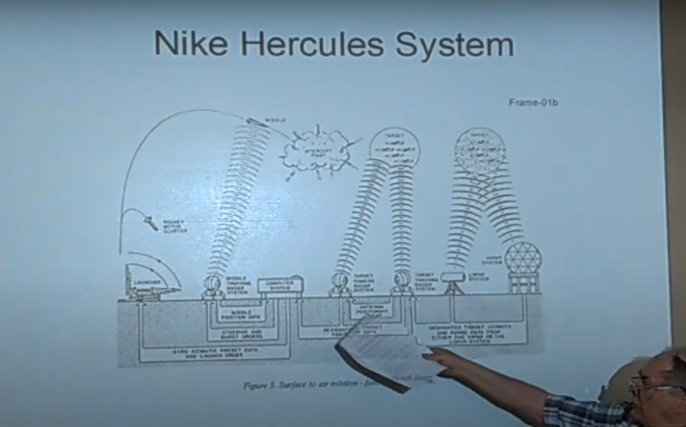
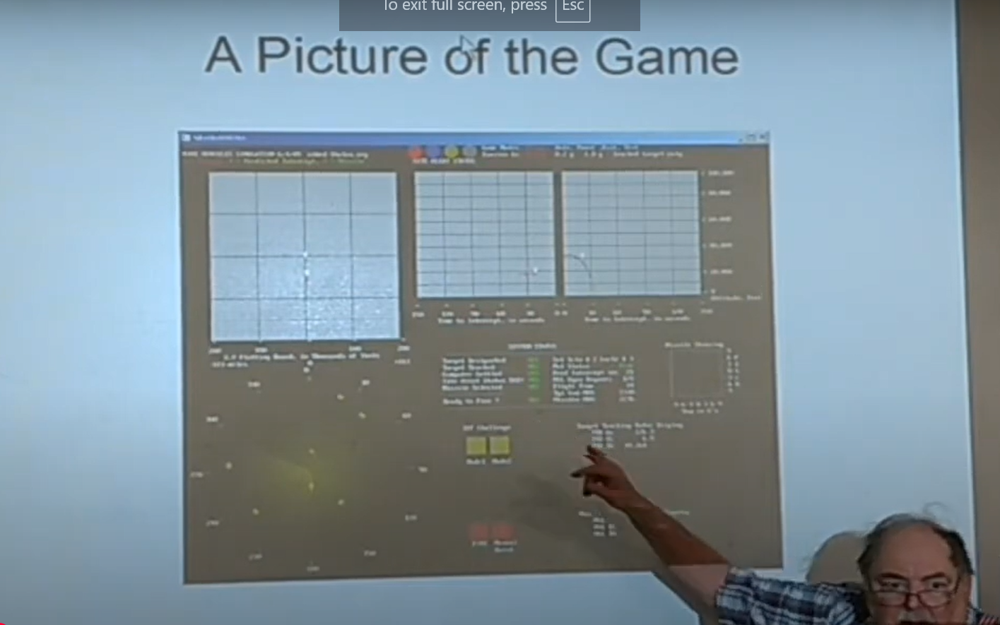
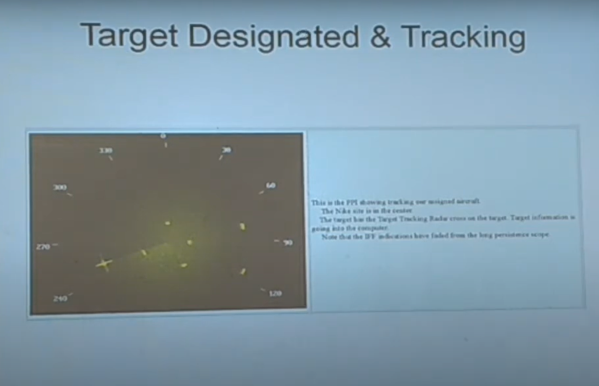
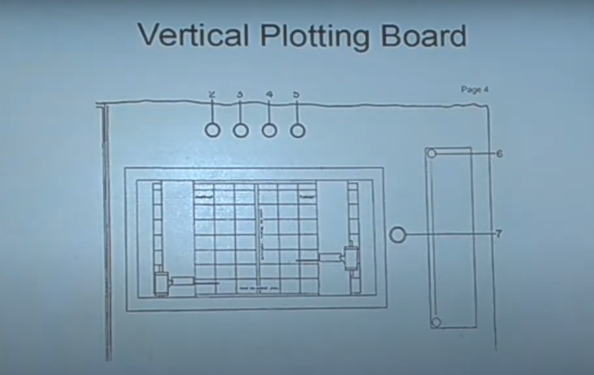
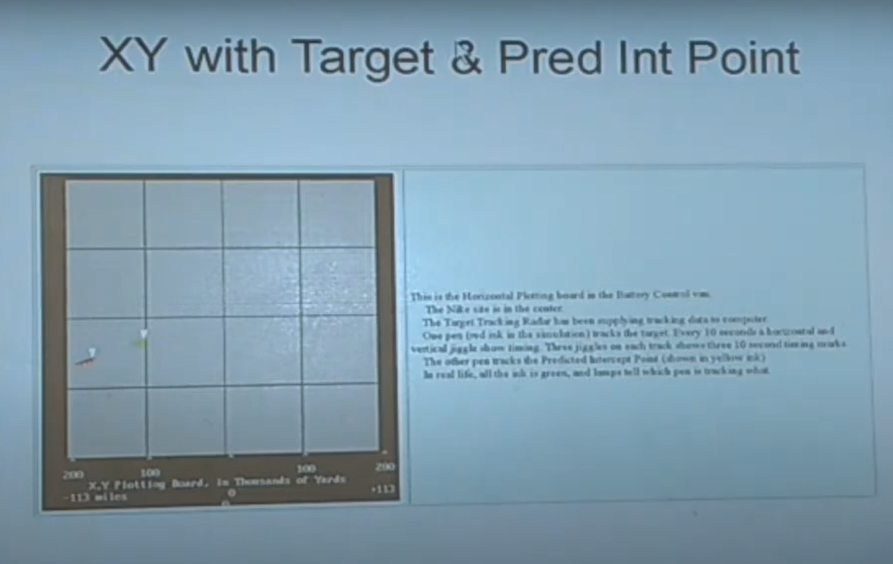
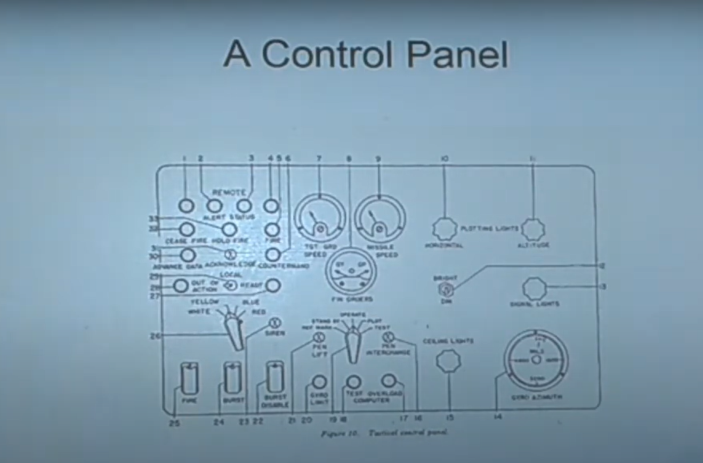
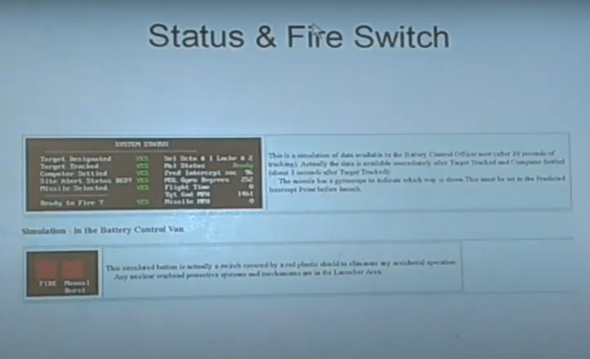
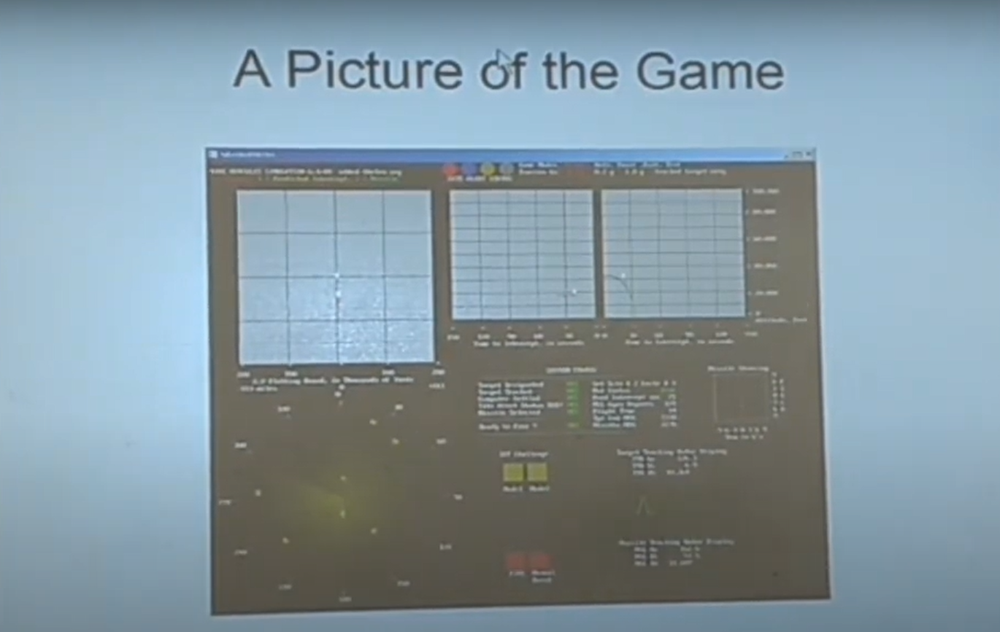
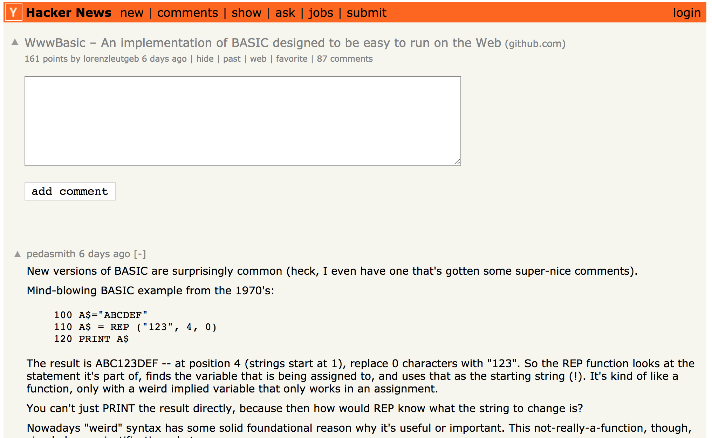

Ed's Nike Launch Simulator
Decemeber 21, 2024
Ed Thelen


Nike Ajax (1953), Nike Hercules (1958)
Battery Control Officer





From: ed ed-thelen.org
Sent: Saturday, December 2, 2023 10:16 AM
To: Randy Thelen
Subject: World too complicated !!!!
At least for my worn-out mind -
or maybe since I'm in comfortable circumstances
maybe a lack of fear/drive/motivation to strive -
https://ed-thelen.org/NikeSimulation.html#SimBrowser
I wrote the game in FreeBasic,
which was Intel only -
While talking about this to the Forth group
Brad Nelson suddenly quit listening and
started scribbling - just a bit distracting -
Just for fun he started making a
FreeBasic to JavaScript translator
So, instead of sending the compiled FreeBasic
I sent the FreeBasic text and Brad's translator
to the on line user.
(The translator time is so short (say a second or two)
that the user does not notice the pause)
The JavaScript was not as fast as the compiled FreeBasic
so I had to remove the (not needed) simulated
Target Tracking and Missile Tracking radar displays.
(for purposes of the game they were just frills)
-Pops
From: Randy Thelen
Sent: Sunday, December 3, 2023 11:05 PM
To: ed ed-thelen.org
Subject: Re: World too complicated !!!!
Thank you!
Super interesting.
Your friend built a compiler, library and interpreter for your program.
It’s kind of amazing!!
You should really thank him. It was no small programming task on his
part to cough up that system. It’s a pretty massive program.
In total, he generated nearly 3,300 lines of code.
— Randy
From: ed ed-thelen.org
Sent: Monday, December 4, 2023, 12:29 PM
To: Brad Nelson
CC: Randy Thelen
Subject: Fw: World too complicated !!!!
Thank you for your FreeBasic to JavaScript converter
again ;--))
https://ed-thelen.org/nike-fromBradNelsonSept26.html
-Ed Thelen
From: Brad Nelson
Sent: Tuesday, December 5, 2023, 9:43 PM
To: ed ed-thelen.org
CC: Randy Thelen
Subject: Re: Fw: World too complicated !!!!
Hi Ed,
You're most welcome!
And by the way the way, it's a small world. About a year ago,
I was curious about how the IBM 1401 instruction set worked
and my Internet searches let me to what I quickly realized
was your website.
So thank you for all your efforts preserving history!
-BradN
Ed's Simulator
~3,100 lines of FreeBASIC
Goal: Run it as-is
FreeBASIC Quirks
- Arrays, Integer, Double, Single, Strings
- Structured IF/ELSEIF/ELSE/END IF
- SELECT CASE, DO LOOP
- CONST, {} Initialization
- Labels, GOTO, GOSUB, RETURN
- 1280x1024 Mode 21
- LINE, PSET, CIRCLE
- GETMOUSE
- LOCATE, PRINT, PRINT USING
- +=, -=, ATAN2
Approach
- Parse upfront
- Simple tokenizer
- Recursive descent parser
- Allocate variables in TypedArrays
- Emit JavaScript code, flush on labels/line numbers
Usage (Separate .BAS)
---- foo.html ----
<!DOCTYPE html>
---- foo.bas ----
PRINT "Hello World!"
FOR i = 1 to 10
PRINT "Counting "; i
NEXT i
Usage (Inline)
<!DOCTYPE html>
Usage (Inline)
µEforth (Inline)
<!DOCTYPE html>
µEforth (Inline)
Graphics
SCREEN 21
FOR i = 1 to 40
FOR j = 1 to 30
CIRCLE (i * 30, j * 30), _
10, i * 6 * 65536 + j * 6 * 256,,,,F
NEXT j
NEXT i
Graphics
Graphics
SCREEN 21
FOR i = 1 to 1000
x1 = INT(RND() * 1280)
y1 = INT(RND() * 1024)
x2 = INT(RND() * 1280)
y2 = INT(RND() * 1024)
c = INT(RND() * 256 * 256 * 256)
LINE (x1, y1)-(x2, y2), c
NEXT i
Graphics
Mouse
SCREEN 21
GETMOUSE x, y, nw, nb
' Wait for mouse events.
DO
GETMOUSE nx, ny, nw, nb
LOOP WHILE x = nx and y = ny
x = nx : y = ny
' Draw a green line following the mouse.
Again:
GETMOUSE nx, ny, nw, nb
LINE (x, y)-(nx, ny), 256 * 255
x = nx : y = ny
GOTO Again
Mouse
Donkey

Ed's Original Simulator

Simulator
and Details on Ed's Site